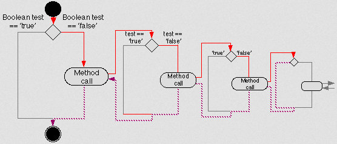
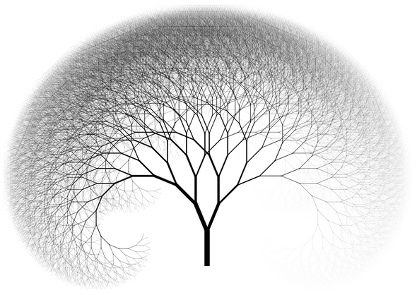

Algorithms: Recursion, Backtracking, DP
本文主要就递归(Recursion)、回溯(Backtracking)、动态规划(DP, Dynamic Programming)三种常见的算法进行分析、总结:
1. Recursion
思想:

1). Fibonacci序列:
1, 1, 2, 3, 5, 8, 13, 21, 34, 55…
递推公式如下：1
2
3
4f(1) = 1
f(2) = 1
f(3) = f(2) + f(1)
f(n) = f(n-1) + f(n-2)
递归实现:1
2
3
4def recursion_fibonacci(n):
if n < 3:
return 1
return recursion_fibonacci(n-1) + recursion_fibonacci(n-2)
迭代实现:1
2
3
4
5
6
7
8
9
10def iterative_fibonacci(n):
if n < 3:
return 1
a = 1
b = 1
while n > 2:
b = a + b
a = b - a
n -= 1
return b
能快速使用迭代实现的算法，一定不要使用递归来实现(可能导致不必要的重复计算、系统栈空间占用等问题)。
其他例子: 典型的二叉树先序、中序、后序遍历。

实战:
226. Invert Binary Tree1
"Google: 90% of our engineers use the software you wrote (Homebrew), but you can’t invert a binary tree on a whiteboard so fuck off."
Hints:
- 递归必须要有递归出口
- 针对具体的问题，可以先用递归去实现算法，再尝试用迭代的方法替代递归的方法(递归转非递归)
2. Backtracking
思想:
在包含问题的所有解的解空间树中，按照深度优先搜索的策略，从根结点出发深度探索解空间树。当探索到某一结点时，要先判断该结点是否包含问题的解，如果包含，就从该结点出发继续探索下去，如果该结点不包含问题的解，则逐层向其祖先结点回溯。（其实回溯法就是对隐式图的深度优先搜索算法）。
若用回溯法求问题的所有解时，要回溯到根，且根结点的所有可行的子树都要已被搜索遍才结束。 而若使用回溯法求任一个解时，只要搜索到问题的一个解就可以结束。
144. Binary Tree Preorder Traversal
94. Binary Tree Inorder Traversal
深度优先搜索(DFS, Depth-first Search)从树的根节点开始，并选择第一个子节点。如果子节点有子节点，则再次选择第一个子节点。当它到达没有子节点的节点时，它回溯，沿树向上移动到父节点，并选择下一个子节点(如果有的话，否则它会再次回溯)。当探索了根节点的最后一个子节点，整个搜索过程就完成了。
Hints:
回溯法是对解空间的深度优先搜索，在一般情况下使用递归函数来实现回溯法比较简单
3. DP
思想:
动态规划的基本思想是将待求解的问题分解为若干子问题(阶段)，按顺序求解子问题，前一子问题的解为后一子问题的求解提供了有用的信息。在求解任一子问题时，列出各种可能的局部解，通过决策保留那些有可能达到最优的局部解，丢弃其他局部解。依次解决各子问题，最后一个子问题就是初始问题(整个问题)的解。
能采用动态规划求解的问题的一般要具有3个性质:
1) 最优化原理: 如果问题的最优解所包含的子问题的解也是最优的，就称该问题具有最优子结构，即满足最优化原理
2) 无后效性: 某阶段状态一旦确定，就不受这个状态以后决策的影响; 也就是说，某状态以后的过程不会影响以前的状态，只与当前状态有关
3) 有重叠子问题: 子问题之间是不独立的，一个子问题在下一阶段决策中可能被多次使用到。(该性质并不是动态规划适用的必要条件，但是如果没有这条性质，动态规划算法同其他算法相比就不具备优势)
实战:
62. Unique Paths
63. Unique Paths II
64. Minimum Path Sum
Hints:
- 一般都会有一个辅助数组，用于存储中间结果
正是因为”能采用动态规划求解的问题的一般要具有3个性质”中的”3)一个子问题在下一阶段决策中可能被多次使用到“这一性质，所以才需要把中间结果进行存储
70. Climbing Stairs这个需要辅助数组吗? 并不是所有的DP都需要中间数组 - 找到递推式就成功了一大半
求解步骤: “找出递推式” -> “代码实现”